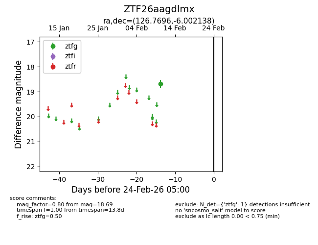
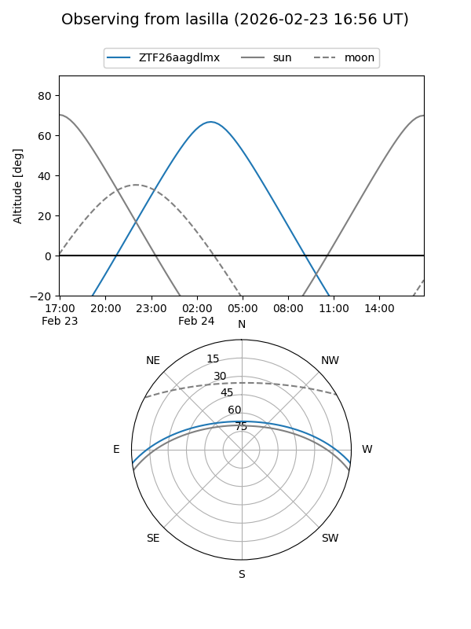
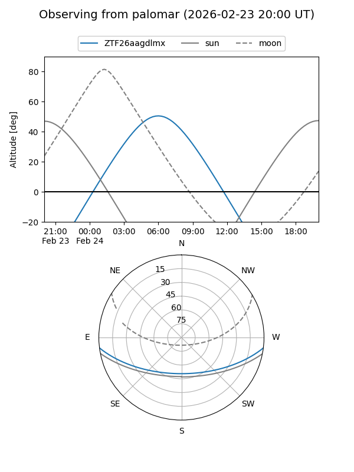

ZTF26aagdlmx
Target ZTF26aagdlmx at 2026-02-24 09:08
Aliases and brokers:
FINK: link
Lasair: link
ALeRCE: link
alt names
ZTF26aagdlmx (ztf,fink_ztf)
Coordinates:
equatorial (ra, dec) = 126.7696,-6.00214
equatorial (HMS+DMS) = 08:27:04.71,-06:00:07.70
galactic (l, b) = (229.8685,+18.12296)
Flags:
Photometry:
last ztfg=18.69
1 ztfg detections
Lightcurve

Visibility


Additional plots